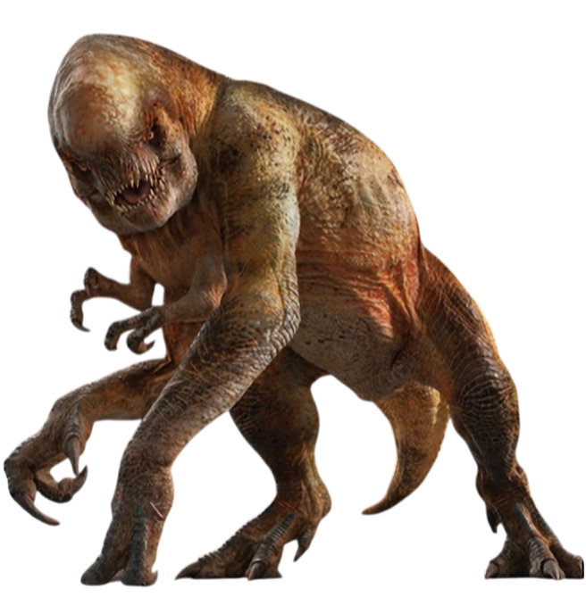
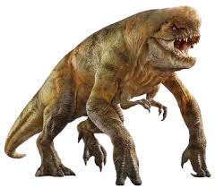

Design harness for the Distortus Rex wave-100 boss, drawn against the
Jurassic World: Rebirth reference art in assets/ref. This painter is now live in
the game (js/drex.js → PAINTERS.mutant); the page stays as the place to
iterate on the gait, the feeding sequence and the death finale in isolation.
Live in game
New design — Distortus Rex v2
Rendered through the same transform the game uses (unit space, facing +x, origin at ground under the hips).
Home-screen preview — the chase
Tourists sprint for their lives and the D-Rex runs them down, using the real menu
eat timeline from game.js (bend → chomp → thrash → toss → gulp) and the
game's own tourist artwork. Victims are placed with drexMouth(), which
tracks the jaws through the gait rather than assuming a fixed offset.
Death finale — stagger & last roar → forelimbs buckle → the body swells and
convulses with light leaking through splitting hide → detonation → two aftershocks →
fragments settle in a smouldering crater. Every launched piece is the real artwork,
drawn through the painter with a deathMask, so the skull, jaw, tail and
each limb are individually recognisable in the air. Deep-link a beat with
?death=2.1.
At gameplay size
The same frame at roughly the size it occupies on the map — the scale that decides whether detail reads or muddies.
Reference
assets/ref — the art the redesign is measured against.

Hero render — melon skull, four arms, pale claws, olive-over-rust hide

Side view — flat topline, upright stance, no spines anywhere
Latest revision — three fixes
Victims no longer shrink when picked up. The victim artwork is drawn in different units from a standing tourist: its whole body spans about 0.83 of a unit, while a standing tourist is ~1.75 units tall. The game passes the same s to both, so a person lost ~57% of their size the instant the jaws closed. s is now derived from that tourist's actual standing height, so held sideways they're exactly as long as they were tall — and it self-corrects for kids, who carry a different height multiplier.
The gulp passes behind the near limbs. It was drawn last, so the lump floated over the arm and leg. Moved inside the body group ahead of the near-side limbs — it now slides down the throat, disappears behind the foreleg, and re-emerges in the belly.
Forelimbs stop vanishing in the death. They were being hidden by deathMask at 0.62s and 0.98s to "buckle" them, but a mask is binary — they just blinked out. Nothing is masked during the collapse now; the buckle is carried by the body pitching and sinking onto them, with a damped hitch on each arm so it still lands in two stages. Every limb stays on screen right up to the blast.
Bigger blast. Fragment velocities roughly doubled and gravity eased (1450 → 1080), so pieces clear most of the frame instead of heaping under the crater. Also more chunks and a wider blood spray.
Previous revision — feeding and the finale
The prey no longer slides into the dinosaur. The game closes the gap by dragging the tourist toward the mouth (e.tr.x += (mouth.x - e.tr.x) * k), which is what read as the victim being sucked in. Inverted: the scene now solves for where the rex must stand for its jaws to reach a tourist at full bite pitch, and eases the rex into that spot over the bend-down. The tourist stays planted and just flails. Commit range is derived from that solve too, so there's never a lunge to cover.
Gulp bulge added, on the same 2.45s beat the other menu dinosaurs use — a tourist-sized lump distending the hide as it travels the throat → chest → belly, with a shadow under it and a stretched-skin highlight. It lives in the painter, not the menu code, because the menu's generic version is a hardcoded offset tuned to the old skull and would surface in the wrong place on this body. Timed 2.45→2.90 so it completes inside the game's 2.95s meal rather than being cut off.
Death finale, staged to beat the current one. The shipping D-Rex death convulses then bursts with rings and anonymous fragments over 6.6s. This runs 7.6s: a last roar and stagger → the forelimbs buckling one at a time → the body swelling and convulsing while light leaks out through splitting hide → detonation with flash, shock rings, crater and ground cracks → two aftershocks → fragments settling in a smouldering crater with drifting embers and smoke.
The fragments are the real artwork. Rather than generic chunks, each launched piece is a painter call with a deathMask hiding everything except that part — so the melon skull, the tail and every limb stay individually recognisable as they tumble and land. This needed a new deathMask.torso key to drop the body shell.
Previous revision — the dip in motion, and the clipped mouth
The skull no longer has its own bob. This was the mid-stride "m". It rode a separate sin(ph × 1.6) wobble that drifted out of phase with the body's pitch and heave, so on the beats where the head dipped and the body didn't, the melon's rear fell back under the shoulder plateau and the valley reopened. It sits inside the pitched group and already rises and settles with the body — making that rigid means the two cannot separate at any phase. Life now comes from the jaw, which doesn't touch the topline.
The skull hinges at its rear, not its centre. Rotating about the centre swung the rear down out of the shoulder during a roar, tearing the join open exactly when the head is most visible. Hinged where it meets the body — which is also where a real skull articulates — the rear stays seated and only the muzzle swings.
Chest pulled back off the jaw. Carrying it forward to x = 0.84 for the fusion had pushed it over the mouth corner, and because the head draws underneath, the body was clipping the back of his own mouth. The chest now tucks back below the jaw line and clears the corner by 0.09 units.
Rear height solved, not eyeballed. Re-pivoting dropped the melon's rear enough to reintroduce a 0.007 dip at the handoff, so I swept candidate heights and measured each. -0.46/-0.51 sits mid-band rather than balanced on an edge, so it stays monotonic under small drift.
Verified across the whole cycle now, not one pose: 48 phases × three roar states, sampling the composite outline every 0.02. Worst dip 0.0010 — invisible. The static check I ran last round is exactly why the moving dip survived it.
Previous revision — killing the static "m"
The composite topline was made monotonic from the hips to the crown. The dip you were tracing wasn't a rendering limit — it was arithmetic. The shoulder crested at y = -1.62 around x = 0.25 while the skull's rear only reached -1.50 at x = 0.37, so the union of the two shapes sagged about 0.08 between them. Two peaks with a valley: a lowercase m. Fixed by flattening the shoulder from a crest into a shallow plateau (-1.60) and raising the melon's rear so it takes over above that line. Sampled every 0.05 across the whole span, the topline now only ever rises — worst backslide 0.002, which is invisible. One curved line from back to skull, no wedge underneath.
Where the handoff happens: torso owns the outline out to x = 0.40, head from x = 0.45 on, and they cross within 0.002 of each other — so there is no corner to see at the transition.
Previous revision — head/body fusion
The head is drawn under the torso, not over it. That was the actual root cause. Reshaping the skull could never finish the job while the head painted on top of the body, because its rear outline was being stroked across the shoulder — and that edge, not the shape, was what kept reading as a join. Rendered underneath, the skull has no rear edge at all: the body simply covers it until the melon rises out from beneath the shoulder around x ≈ 0.5. There is physically nowhere for a neck to be.
The topline carries forward into the skull. The crest used to peak at x = 0.30 and fall away, leaving the melon's rear floating above the shoulder with real daylight between them. The back now runs level to x = 0.40 and on to 0.76, so body and head overlap solidly at every height.
Soft occlusion at the emergence point, spilling forward out of the shoulder onto the skull, so the shoulder appears to roll over into the head instead of butt-joining it. Feathered hard and kept weak — any crisp edge here and the seam comes straight back.
Previous revision
Head fusion, first attempt. Two separate things were making it read as a ball on a stick. The skull path closed off at the back, giving the silhouette a discrete circular edge where the reference has none — there, skull, neck and shoulder are one unbroken mass and you genuinely can't say where the head ends. It now runs back to x = -0.60, deep inside the torso, stretched along the body axis rather than domed like a sphere. Separately, its radial gradient darkened toward the rear while the torso behind it was light, so even overlapping perfectly there was a value step betraying the join; the fill is now the same dorsal-to-ventral ramp the torso uses. The separate neck shape is gone — it only reintroduced the seam.
Round bumps replaced with lines and blotches. All circular knots deleted. The hide is now long creases running down and back off the spine, stretched blotches at roughly 4:1, and short broken nicks. Lengths, spacing and opacity are all deliberately uneven, and only the two deepest folds get a highlight — pairing every dark line with a light one is exactly what manufactures a banded-shell look.
Grasping arms scaled down about 30% in reach and limb width, with proportionally smaller claws.
More upright again — resting nose-up pitch more than doubled (0.05 → 0.115 rad), so the chest and skull carry higher through the whole cycle rather than only at the top of the arm push.
Previous revision
The hand is a closed fist before it lands. The fold was previously driven by ground load, which is zero at the instant of touchdown — so it landed claws-first and rolled onto the knuckles afterward. It's now phase-led: fully curled by touchdown, held through stance, opening again only after lift-off. Scrub to phase ≈4.3 vs ≈5.5 to see the near hand pre-contact and mid-stance.
All spines and osteoderms removed — back and tail are smooth now, with only soft tumorous knots inside the outline. Both surviving references show wrinkled, pebbled hide and no protruding hardware.
Colour rebuilt from the two remaining renders. They're two-tone in hue, not brightness: olive-khaki over the back and shoulders grading into rust down the flanks, with lower limbs cooling to grey-olive. A single shade ramp off one hue can't express that, so there's now an olive dorsal wash, a rust flank wash, and limbs blended toward cool grey. The overall value range was also pulled darker — the previous pass washed out to a uniform milky tan.
Beluga melon. The skull is now a tall smooth dome that bulges up and forward and throws a shelf over the face, with the muzzle tucked underneath and the eye sitting in its shadow. The earlier version only made the braincase tall; the forward bulge and overhang are what actually sell it. Kept deliberately smooth — lumps break the one clean form the head has.
More upright. A flatter, longer topline replaces the hard crest, and the body now pitches nose-up about the hip — deepening as an arm takes support, so the chest and head visibly ride up and settle with each step instead of staying folded over. Hind legs are unaffected because the hip is the pivot; the arms' shoulder anchors run through the same rotation.
Maw clamped to the jaw. Its lower edge is now derived from the actual jaw transform instead of scaled off the gape angle. This mattered: the menu tourist-eating sequence stacks base gape + roar + bite past a full radian, far wider than the walk cycle, and the approximated edge overshot the jawline there and hung a red wedge in open air. Hit Bite — or Roar and Bite together for the worst case — to check it.
Design foundations
Top-heavy hunch. The shoulder hump is now the tallest point of the animal and sits clearly above the skull. The old version's back and head were nearly level, which read as a generic theropod.
The head juts past the hands. The muzzle — not the chest — is the leading edge of the silhouette, and the skull hangs off the hump with essentially no neck, exactly as in the reference.
Swollen, snoutless skull. Bulbous cranium with a heavy overhanging brow, a stubby blunt muzzle, cranial tumours breaking the dome, and a tiny beady eye sunk in a bruised socket.
Teeth that never close. Irregular yellowed uppers are drawn last so they hang outside the lower jaw — the signature "can't shut its mouth" look.
Two arm pairs with different jobs. Long weight-bearing arms that plant like knuckles with load-based contact shadows, plus spindly long-fingered graspers curled under the chin. The old version drew four near-identical arms.
Pale keratin claws drawn as filled sickles rather than strokes, matching the hero render where the claws are the brightest thing on the creature.
Hide that holds up close. Dorsal-to-ventral lighting gradient, a rim light along the back contour, mottled dappling, tumorous knots with lit crowns, flank wrinkles, and ambient occlusion where the skull jams into the shoulders — all clipped to the body outline.
Broken osteoderm ridge running skull → tail, taken from the concept sheet.
⚠ The new silhouette is wider (snout reaches ~1.6 units vs ~1.15). If you approve it, the menu
mouth offsets in MENU_MOUTHS/menuMouthOffset() want re-tuning so the
menu bite animation still lands in the jaws.